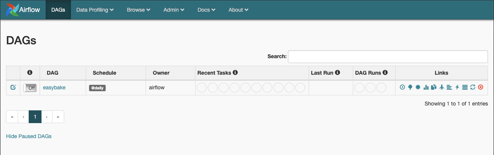
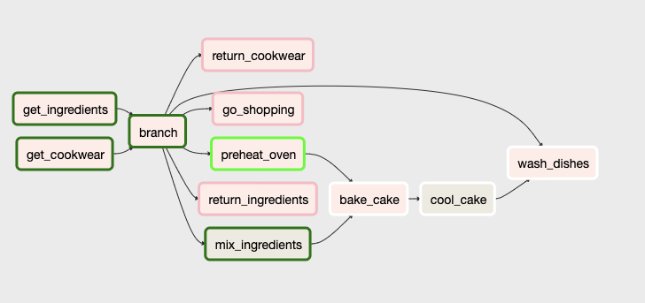
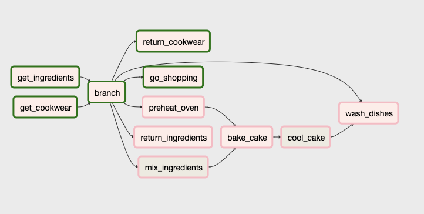

Apache Airflow is an open-source "workflow management platform" that was initially created by Airbnb and released to the public for the first time in 2015. Since then it has become widely popular among data/development teams for a wide range of purposes. My team has recently adopted
Airflow as well, and as such I was more than inclined to get familiar with it. There are plenty of prexisting how-tos and walkthroughs for Airflow (not to mention Airlow's documentation is pretty bomb), but now there's going to be plenty + 1! The following post will walk through how I learned Airflow and as such will combine
simple to more complex topics. I'll go through these topics and associated code step by step, but if you want to following along with my pre-built code it all exists in my repo: frytoli/airflow_easybake.

Now, let's actually define the DAG and initialize its operators. Begin be defining the DAG with a few descriptive and informative parameters. A list of optional parameters exists in the documentation here. Additionally, I like to use the "with" keyword when working with this defined DAG:
Now let's add the operators. Let's just walk through our conceptual plans we have defined previously. We're going to need to attempt to grab all required ingredients from the pantry and all required cookwear items from the cabinets. Let's begin by initializing two operators that will complete these tasks, respectively. Completing these tasks will require a bit of computation, so I'm going to defined them as PythonOperators. The "task_id" we assign to each of these operator instances will be used in the DAG itself as a reference to the operator, and the "python_callable" value is the name of the python function that will be called when these operators are prompted to begin. We have yet to actually define these functions, but I plan on naming them "get_ingredients" and "get_cookwear" and I will reference them as such in the operator definitions. As well, these yet-to-be-defined functions set as the "python_callable" values will need to know the required ingredients and required cookwear items for the recipe. We'll pass that data to the functions as an argument that we'll name "required". While we're here, let's define to place holder functions for use by these operators. I'll add them to the "Cake Baking Methods" section of our code that we skipped over. The bottom of our file should now look something like this:
Airflow
As stated above, Apache Airflow is a "workflow management platform" that is made up of four primary concepts:- Directed Acyclic Graph (DAG): Directed acyclic graphs are graphs that are directed (can be traveresed in only one direction) and are not cyclic, meaning that it is impossible to traverse the entire graph starting at just one vertex. Therefore, these kinds of graphs are topologically sorted with each vertex is placed in the graph in a certain order. DAGs are used in Airflow workflows to depict and organize the process of tasks in one's workflow. Read more about DAGs as they pertain to Airflow here.
- Metadata Database: The Metadata Database is a database (chosen to be Postgress in the official Docker repository) that keeps a record of all of a DAG's tasks along with their progress/statuses (queued, scheduled, running, successful, failed, and etc.) while they run.
- Scheduler: The Scheduler leverages the defined DAG and Metadata Database to run tasks in the order they have been asked to run.
- Executor: The Executor communicates with the Scheduler to allocate and identify which available resources will actually complete the given tasks as defined in the DAG.
Preparation and Docker
To begin, I cloned the official Apache Airflow docker repository that lives at puckel / docker-airflow and replaced the tutorial file from the dags directory with an empty file of my own I named easybake_dag.py. You could easily pull the image from the Docker repository as well, but you'd still need to entrypoint script and configuration file. Then, I opted to begin learning with a Local Executor, which according to Airflow management company Astronomer is the "easy option" (holla!) (Read more about Astronomer's explaination of Executors in their guide Airflow Executors: Explained). To prepare for this I deleted ./docker-compose-CeleryExecutor.yml, renamed ./docker-compose-CeleryExecutor.yml to docker-compose.yml, and moved docker-compose.yml up a directory because that's how I like to organize my projects that use docker-compose. In doing so, I also changed the volumes path within the docker-compose yaml file to account for this structural reorganization by changing "./dags:/usr/local/airflow/dags" to "./airflow/dags:/usr/local/airflow/dags". So, at this point my new project looks like this (ignoring some of the unnecessary files):
├── airflow-eaysbake/
| ├── docker-compose.yml
| ├── airflow/
| | ├── Dockerfile
| | ├── config
| | | └── airflow.cfg
| | ├── dags
| | | └── easybake_dag.py
| | ├── script
| | | └── entrypoint.sh
Just Call Me Buddy Valastro
Now we can get started with our workflow! First, let's conceptually lay out the overarching task we want to accomplish and the steps required to get complete said task. We're going to bake a cake. But, baking a cake can be a bit complicated! Let's discuss:- We should use a recipe to bake our cake. This recipe, like normal recipes, will tell us which ingredients and cookwear items we'll need to bake a single cake. We can hardcode these requirements to make it easy.
- We should get the ingredients from our pantry, AND we will then need to make sure that we have enough of the required ingredients in our pantry (consider our pantry to be a table in a database containing ingredient items). If at any point we don't have enough of a required ingredient in the pantry, we should go shopping for more of the ingredient.
- On that same note, we should get our cookwear from our cabinets, AND we will need to make sure that we have enough of the required cookwear items in our cabinets (also consider our cabinets to be a table in a database containing cookwear items). If at any point we don't have enough of a required cookwear item, we should wash the cookwear items (doing the dishes is never fun).
- If we do NOT have enough of the required ingredients, we should return all unused cookwear to the cabinets and go shopping for the required ingredients in the recipe.
- If we do NOT have enough of the required cookwear items, we should return all unused ingredients to the pantry and wash the dishes to replenish enough of the required cookwear items in the recipe.
- If we have enough of the required ingredients and required cookwear items we should take those items from the pantry and cabinets, then simultaneously preheat the oven and mix the ingredients.
- After the oven is successfully preheated and the ingredients have been mixed, we can then bake the cake, cool the cake, and then clean up after oursevles by washing the dishes.
Define the Recipe
Let's start working on our code. Before touching any Airflow things, let's hardcode our recipe. Open up easyflow_day.py and add a recipe. I 100% just made this recipe up; the important thing is really just the structure as pieces of this recipe will be used by future code. Also, I hardcoded the "actual oven temperature" below the recipe to represent the cold oven temperature (before it has been pre-heated). I set this value to 65:
'''
The Cake Recipe:
'''
recipe = {
'required_ingredients' : {
'eggs' : 2,
'flour' : 2,
'sugar' : 1,
'butter': 1,
'water' : 1
},
'required_cookwear' : {
'pan' : 1,
'mixer': 1,
'spoon': 1
},
'required_temp' : 350
}
oven_temp = 65
Stock the Pantry and Organize the Cabinets
In the mindset of preparation, let's not add our pantry and cabinet code. I mentioned briefly above to consider these sources as tables in a "kitchen" database, each of which contains food items and cookwear items respectively. Because I don't feel like messing with taking time to set up a database, I'm going to ask y'all to use your 🌈 imagination 🌈. With that being said, I'm going to create two additional json files one of which will represent the pantry and the other will represent the cabinets. Create two json files within the dags directory named pantry.json and cabinets.json. The structure of the dags directory will then look like this:
├── airflow-eaysbake/airflow/dags/
| ├── cabinets.json
| ├── pantry.json
| └── easybake_dag.py
Throw some data in the pantry file, for example:
{
"eggs": 12,
"flour": 8,
"sugar": 4,
"butter": 4,
"water": 100
}
And some data in the cabinets file, like this:
{
"spoon": 2,
"pan": 2,
"mixer": 1
}
Then, let's write some "database connection" methods within our main file easybake_dag.py. Again, because of the fact that we're not actually connecting to a database these functions will just be reading/writing data from the json files we just created. Two things to note here: 1. we're using the os and json python packages here
so we'll need to import those and 2. I'm using the environment variable AIRFLOW_HOME to accurately identify the path to our files. AIRFLOW_HOME is defined and set in the entrypoint.sh script that is run upon entrypoint to the Docker container, and this script sets this variable to "/usr/local/airflow".
'''
Pantry and Cabinet Access Functions
(Consider these as database communication functions)
'''
import json
import os
# Read ingredients from the pantry
def read_pantry():
pantry_file = os.path.join(os.environ.get('AIRFLOW_HOME'),'dags','pantry.json')
with open(pantry_file,'r') as injson:
pantry = json.load(injson)
return(pantry)
# Write ingredients to the pantry
def write_pantry(items):
pantry_file = os.path.join(os.environ.get('AIRFLOW_HOME'),'dags','pantry.json')
with open(pantry_file,'w') as outjson:
json.dump(items, outjson, indent=4)
# Read cookwear items from the cabinets
def read_cabinets():
cabinets_file = os.path.join(os.environ.get('AIRFLOW_HOME'),'dags','cabinets.json')
with open(cabinets_file,'r') as injson:
cabinets = json.load(injson)
return(cabinets)
# Write cookwear items to the cabinets
def write_cabinets(items):
cabinets_file = os.path.join(os.environ.get('AIRFLOW_HOME'),'dags','cabinets.json')
with open(cabinets_file,'w') as outjson:
json.dump(items, outjson, indent=4)
I DAG It
Now we're going to begin translating the skeleton of our conceptual cake-baking workflow into a DAG for use by Airflow. In my code I like to put anything related to my DAG at the bottom of my file, so I'm now going to add a comment and a couple lines after my pantry/cabinet access functions to act as a placeholder for the methods my DAG is going to leverage to get its jobs done. Then, I'm going to begin writing my DAG code:
'''
Cake Baking Methods:
'''
# =========================================================
'''
The DAG
'''
Now, let's import the necessary modules for our DAG:
from airflow.operators.python_operator import BranchPythonOperator
from airflow.operators.python_operator import PythonOperator
from airflow.operators.bash_operator import BashOperator
from airflow import DAG
import datetime
And now let's define our DAG's default arguments. A default arguments dictionary is optional, and if one is defined and passed to a DAG the arguments will be applied to all of the DAG's operators. A list of these optional arguments can be found in the documentation
here. My default arguments dictionary is as follows:
# Define the default arguments
default_args = {
'owner': 'airflow',
'depends_on_past': False,
'start_date': datetime.datetime(2020, 1, 1),
'email_on_failure': False,
'email_on_retry': False,
'retries': 1,
'retry_delay': datetime.timedelta(seconds=5),
'task_concurrency': 1
}
I've set the argument "owner" to "airflow" as is common in example Airflow DAGs. The argument "depends_on_past" is set to False which tells the DAG that it is not necessary for tasks to rely on previous tasks' schedule to succeed. I have set "start_date" to January 1, 20202, with python's datetime package.
I don't want to receive any emails, so I have set both "email_on_failure" and "email_on_retry" to False. Upon a failure, I am going to let the DAG retry the task instance one time and therefore have set "retries" to 1, and I am going to require the DAG to wait five seconds before trying again as defined with
"retry_delay" set to a datetime timedelta of 5 seconds. Lastly, I am going to limit the concurrent runs per execution date to one by setting "taks_concurrency" to 1.
Now, let's actually define the DAG and initialize its operators. Begin be defining the DAG with a few descriptive and informative parameters. A list of optional parameters exists in the documentation here. Additionally, I like to use the "with" keyword when working with this defined DAG:
# Define the DAG and its operators
with DAG(
dag_id='easybake',
description='Baking cakes until we run out of ingredients with a DAG',
default_args=default_args,
catchup=False,
schedule_interval='@daily'
) as dag:
I think the "dag_id" and "description" parameters are relatively self-explainatory. I've set "default_args" to the "default_args" dictionary that we've previously defined. I've set the "catchup" parameter to False to ensure that the DAG will not "catch up" to the current day by running enough task instances
to make up for the lost time. And lastly, I've set the DAG's "schedule_interval" to "@daily" to tell the DAG to run the task instance just once per day -- we'll be either ultimately cranking out a cake, going shopping, or washing the dishes once a day.
Now let's add the operators. Let's just walk through our conceptual plans we have defined previously. We're going to need to attempt to grab all required ingredients from the pantry and all required cookwear items from the cabinets. Let's begin by initializing two operators that will complete these tasks, respectively. Completing these tasks will require a bit of computation, so I'm going to defined them as PythonOperators. The "task_id" we assign to each of these operator instances will be used in the DAG itself as a reference to the operator, and the "python_callable" value is the name of the python function that will be called when these operators are prompted to begin. We have yet to actually define these functions, but I plan on naming them "get_ingredients" and "get_cookwear" and I will reference them as such in the operator definitions. As well, these yet-to-be-defined functions set as the "python_callable" values will need to know the required ingredients and required cookwear items for the recipe. We'll pass that data to the functions as an argument that we'll name "required". While we're here, let's define to place holder functions for use by these operators. I'll add them to the "Cake Baking Methods" section of our code that we skipped over. The bottom of our file should now look something like this:
'''
Cake Baking Methods:
'''
# Acquire the necessary ingredients until there are not enough left
def get_ingredients(required):
print('placeholder')
# Acquire the necessary cookwear items until not enough are clean
def get_cookwear(required):
print('placeholder')
# =========================================================
'''
The DAG
'''
# Define the default arguments
default_args = {
'owner': 'airflow',
'depends_on_past': False,
'start_date': datetime.datetime(2020, 1, 1),
'email_on_failure': False,
'email_on_retry': False,
'retries': 1,
'retry_delay': datetime.timedelta(seconds=5),
'task_concurrency': 1
}
# Define the DAG and its operators
with DAG(
dag_id='easybake',
description='Baking cakes until we run out of ingredients with a DAG',
default_args=default_args,
catchup=False,
schedule_interval='@daily'
) as dag:
opr_get_ingredients = PythonOperator(
task_id='get_ingredients',
python_callable=get_ingredients,
op_kwargs={'required':recipe['required_ingredients']}
)
opr_get_cookwear = PythonOperator(
task_id='get_cookwear',
python_callable=get_cookwear,
op_kwargs={'required':recipe['required_cookwear']}
)
If we continue on in this way, stepping through our conceptual plans we should define operators to return unused ingredients to the pantry, return unused cookwear items to the cabinets, go shopping, wash the dishes, preheat the oven, mix the ingredients, bake the cake, and lastly cool the cake. After doing so, our code will look something like this.
Note 1. the inclusion of the global oven_temp variable in the functions for preheating the oven and baking the cake and 2. the use of BashOperator for the operators that mix the ingredients and cool the cake since the tasks simply output a string and sleep (I thought it'd be interesting to show examples of multiple operator types):
'''
Cake Baking Methods:
'''
# Acquire the necessary ingredients until there are not enough left
def get_ingredients(required):
print('placeholder')
# Acquire the necessary cookwear items until not enough are clean
def get_cookwear(required):
print('placeholder')
# Return the unused ingredients to the pantry
def return_ingredients(required):
print('placeholder')
# Return the unused cookwear to the cabinets
def return_cookwear(required):
print('placeholder')
# Preheat the oven if it hasn't been preheated before
def preheat_oven(required):
global oven_temp
print('placeholder')
# Bake the cake!
def bake_cake(required):
global oven_temp
print('placeholder')
# Replenish the pantry with the amount of ingredients required for the recipe
def go_shopping(required):
print('placeholder')
# Wash all the cookwear that was just used
def wash_dishes(required):
print('placeholder')
# =========================================================
'''
The DAG
'''
# Define the default arguments
default_args = {
'owner': 'airflow',
'depends_on_past': False,
'start_date': datetime.datetime(2020, 1, 1),
'email_on_failure': False,
'email_on_retry': False,
'retries': 0,
'retry_delay': datetime.timedelta(seconds=5),
'concurrency': 1
}
# Define the DAG and its operators
with DAG(
dag_id='easybake',
description='Baking cakes until we run out of ingredients with a DAG',
default_args=default_args,
catchup=False,
schedule_interval='@daily'
) as dag:
opr_get_ingredients = PythonOperator(
task_id='get_ingredients',
python_callable=get_ingredients,
op_kwargs={'required':recipe['required_ingredients']}
)
opr_get_cookwear = PythonOperator(
task_id='get_cookwear',
python_callable=get_cookwear,
op_kwargs={'required':recipe['required_cookwear']}
)
opr_return_ingredients = PythonOperator(
task_id='return_ingredients',
python_callable=return_ingredients,
op_kwargs={'required':recipe['required_ingredients']}
)
opr_return_cookwear = PythonOperator(
task_id='return_cookwear',
python_callable=return_cookwear,
op_kwargs={'required':recipe['required_cookwear']}
)
opr_preheat_oven = PythonOperator(
task_id='preheat_oven',
python_callable=preheat_oven,
op_kwargs={'required':recipe['required_temp']}
)
opr_mix_ingredients = BashOperator(
task_id='mix_ingredients',
bash_command='echo "Mix mix mix... Mix mix mix..." && sleep 5'
)
opr_bake_cake = PythonOperator(
task_id='bake_cake',
python_callable=bake_cake,
op_kwargs={'required':recipe['required_temp']}
)
opr_cool_cake = BashOperator(
task_id='cool_cake',
bash_command='echo "Cool cool cool... Cool cool cool..." && sleep 5'
)
opr_go_shopping = PythonOperator(
task_id='go_shopping',
python_callable=go_shopping,
op_kwargs={'required':recipe['required_ingredients']}
)
opr_wash_dishes = PythonOperator(
task_id='wash_dishes',
python_callable=wash_dishes,
op_kwargs={'required':recipe['required_cookwear']}
)
Let's now set up the dependencies for the tasks in our DAG. Dependencies can be defined either syntatically or with bitshift operators. Astronomer does a good job explaining these in detail in their article Managing Dependencies in Apache Airflow. I like how bitshift operators
look, so I used those. Our cake baking task instance begins with retrieving the required ingredients and retrieving the required cookwear items as specified in the recipe. These tasks can occur in tandem and doing so will contribute to the efficiency of our cake baking process. With bitshift operators, we can define tasks to run in parallel by
organizing them as a group. Our DAG will begin as follows:
[opr_get_ingredients, opr_get_cookwear] >>
Now, the next step here is interesting. As defined in our conceptual workflow, our DAG's next step will depend on whether or not we have enough of the require ingredients and cookwear items. Three possible next steps exist depending upon the results of the first two parallel tasks. Therefore, we need to define a branch task and operator to handle
making this decision. As such, let's have our get_ingredients and get_cookwear functions return True if all required ingredients/cookwear items were successfully gathered from the pantry/cabinets and False if NOT all required ingredients/cookwear items were successfully gathered from the pantry/cabinets. Now, let's add
a BranchPythonOperator to our list of defined operators. Branch Operators evaluate an arbitrary conditional, which is typically related to a previously completed task, and identifies the next task/path to follow. Because our Branch Operator will
require the returned values of the first two tasks, we'll need to specifiy "provide_context" to be True:
.
.
.
python_callable=wash_dishes,
op_kwargs={'required':recipe['required_cookwear']}
)
opr_branch = BranchPythonOperator(
task_id='branch',
python_callable=branch,
provide_context=True
)
Next we'll define the actual branch method. This will take into account the results of the two previous tasks get_ingredients and get_cookwear and return the next task(s) to proceed with. We will retrieve the results of the two previous tasks with Xcoms.
The beginning of the function will look like this:
# Branch function
def branch(**kwargs):
# Retrieve the returned values of the get_ingredients and get_cookwear operators
have_ingredients = kwargs['ti'].xcom_pull(task_ids='get_ingredients')
have_cookwear = kwargs['ti'].xcom_pull(task_ids='get_cookwear')
If we have successfully grabbed enough of the required ingredients and cookwear items, we can continue on to bake the cake. Before the cake is actually baked we need to preheat the oven and mix the ingredients. Because these two tasks are not dependent on each other in any way, they can happen in tandem. Therefore, if we have successfully grabbed
enough of the required ingredients and cookwear items, the branching function can tell the DAG to preheat the oven and mix the ingredients in parallel by returning these two task's ids in a list:
# Branch function
def branch(**kwargs):
# Retrieve the returned values of the get_ingredients and get_cookwear operators
have_ingredients = kwargs['ti'].xcom_pull(task_ids='get_ingredients')
have_cookwear = kwargs['ti'].xcom_pull(task_ids='get_cookwear')
# If both the required ingredient and cookwear needs have been met, continue to mixing the batter
if have_ingredients and have_cookwear:
return(['preheat_oven', 'mix_ingredients'])
Else, if we have NOT successfully grabbed enough of the required ingredients and we have NOT successfully grabbed enough of the required cookwear items, have the branching function tell the DAG to go shopping and wash the dishes:
# Branch function
def branch(**kwargs):
# Retrieve the returned values of the get_ingredients and get_cookwear operators
have_ingredients = kwargs['ti'].xcom_pull(task_ids='get_ingredients')
have_cookwear = kwargs['ti'].xcom_pull(task_ids='get_cookwear')
# If both the required ingredient and cookwear needs have been met, continue to mixing the batter
if have_ingredients and have_cookwear:
return(['preheat_oven', 'mix_ingredients'])
# Else if the required ingredient needs have NOT been met AND the cookwear needs have NOT been met, go shopping and wash the dishes
elif not have_ingredients and not have_cookwear:
return(['go_shopping', 'wash_dishes'])
Else, if we have NOT successfully grabbed enough of the required ingredients and we have successfully grabbed enough of the required cookwear items, go shopping and return the unused cookwear items to the cabinets:
# Branch function
def branch(**kwargs):
# Retrieve the returned values of the get_ingredients and get_cookwear operators
have_ingredients = kwargs['ti'].xcom_pull(task_ids='get_ingredients')
have_cookwear = kwargs['ti'].xcom_pull(task_ids='get_cookwear')
# If both the required ingredient and cookwear needs have been met, continue to mixing the batter
if have_ingredients and have_cookwear:
return(['preheat_oven', 'mix_ingredients'])
# Else if the required ingredient needs have NOT been met AND the cookwear needs have NOT been met, go shopping and wash the dishes
elif not have_ingredients and not have_cookwear:
return(['go_shopping', 'wash_dishes'])
# Else if the required ingredient needs have NOT been met BUT the cookwear needs have been met, go shopping and return the cookwear to the cabinets
elif not have_ingredients and have_cookwear:
return(['go_shopping', 'return_cookwear'])
And finally, else if we have successfully grabbed enough of the required ingredients and we have NOT successfully grabbed enough of the required cookwear items, return the unused ingredients to the pantry (wasting isn't cool!) and wash the dishes:
# Branch function
def branch(**kwargs):
# Retrieve the returned values of the get_ingredients and get_cookwear operators
have_ingredients = kwargs['ti'].xcom_pull(task_ids='get_ingredients')
have_cookwear = kwargs['ti'].xcom_pull(task_ids='get_cookwear')
# If both the required ingredient and cookwear needs have been met, continue to mixing the batter
if have_ingredients and have_cookwear:
return(['preheat_oven', 'mix_ingredients'])
# Else if the required ingredient needs have NOT been met AND the cookwear needs have NOT been met, go shopping and wash the dishes
elif not have_ingredients and not have_cookwear:
return(['go_shopping', 'wash_dishes'])
# Else if the required ingredient needs have NOT been met BUT the cookwear needs have been met, go shopping and return the cookwear to the cabinets
elif not have_ingredients and have_cookwear:
return(['go_shopping', 'return_cookwear'])
# Else if the required ingredient needs have been met BUT the cookwear needs have NOT been met, wash the dishes and return the ingredients to the pantry
elif not have_cookwear and have_ingredients:
return(['wash_dishes', 'return_ingredients'])
Now, let's hop back to our DAG dependencies and continue to build out that same logic while incorporating our branching operator. The finished graph should look like this:
# Define the DAG structure
[opr_get_ingredients, opr_get_cookwear] >> opr_branch
opr_branch >> [opr_preheat_oven, opr_mix_ingredients] >> opr_bake_cake >> opr_cool_cake >> opr_wash_dishes
opr_branch >> [opr_go_shopping, opr_wash_dishes]
opr_branch >> [opr_go_shopping, opr_return_cookwear]
opr_branch >> [opr_wash_dishes, opr_return_ingredients]
The Science to Baking
Welp, we've covered most of the Airflow bits and now all that's left is the actual logic for the Python methods which I'm not going to cover because it's not anything fancy. In fact, I'll just give the finished code to you: easybake_dag.py. The only thing to really note here is my use of the logger python package. Airflow has logging setup by default which makes implementing outputting with logger as simple as replacing any print statements with logging statements like logging.info as is shown in my code.Mmm Mmm
Now let's run the containers (Airflow's webserver and postgress metadata database) and test our DAG. Run the following command in the root directory (eaysbake_airflow/):
docker-compose build && docker-compose up -d
Once the containers are up, navigate in your browser to localhost:8080. The page should look something like this:

When you're ready, turn the DAG on by clicking on the On/Off slider in the second column of the table body and then trigger the DAG by clicking the "play" icon in the last column of the table body. Confirm that you want to run the DAG, then you can watch the progress of the DAG in a number of views after clicking on the DAG title in the table body.
I like graph view. You can refresh the DAG by clicking the refresh button in the navigation pane to see an upgraded progress report for the tasks. This is what the graph view of our DAG will show if we have enough ingredients and cookwear items and both tasks have completed successfully, the ingredients have successfully been mixed, and the oven is
currently preheating. Note that the return_ingredients, return_cookwear, and go_shopping tasks have been skipped thanks to our Branching Operator:

In the following case, our DAG was unable to pull the required amount of ingredients from the pantry for the recipe. So, our Branching Operator told the DAG to return the unused cookwear items and go shopping:

When viewing the logs for a given task, we can see our output we hardcoded in our operator methods. For example, after successful completion of the "go_shopping" task, the associated logs show:
INFO - [YYYY-MM-DD HH:MM:SS,FFF] {{easybake_dag.py:172}} INFO - Purchased 2x ingredient eggs
INFO - [YYYY-MM-DD HH:MM:SS,FFF] {{easybake_dag.py:172}} INFO - Purchased 2x ingredient flour
INFO - [YYYY-MM-DD HH:MM:SS,FFF] {{easybake_dag.py:172}} INFO - Purchased 1x ingredient sugar
INFO - [YYYY-MM-DD HH:MM:SS,FFF] {{easybake_dag.py:172}} INFO - Purchased 1x ingredient butter
If left to run, this task instance will prompt itself and run again each day until it is stopped. To shut down the containers run:
docker-compose down
Pretty neat right!! There's plenty more to learn and explore, but this exercise familiarized me enough with Airflow for the meantime. I hope it has helped you too! Thanks for reading. Now, go take a walk. I sure as heck am.